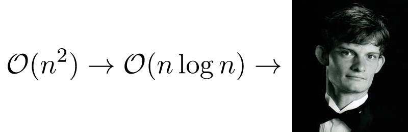

Availible for consulting opportunities in media arts • game design • interactive media • educational software • creative technology.

Greetings, my name is Bryce Summers and I've been writing computational geometry and rendering algorithms for 6+ years. I've also written my fair share of computer algebra systems, data structures, font rendering systems, etc.
I enjoy assisting artists and designers with their computer science needs, especially where such assistance results in the creation of open-source software that solves
interesting, hard problems.
I'm familiar with OpenFrameworks, Processing, and other popular toolkits for arts-engineering.
I think that I am rather good at translating technical papers into high-performance code and solving new problems.
I can work in C++, Javascript, Java, Python, or essentially any language you need.
I also have a broad background in the Fine Arts, especially bassoon playing and photography. I would be happy to employ any of my developed talents to help you out.
Testimonial
"Bryce Summers has saved my ass on at least three occasions. One time he wrote a graph
algorithm that had literally stumped me for fifteen years, enabling me to make a project that I'd essentially given up on. He also programmed a linear algebra solution that was key to making one of my major projects able to work in real time. Bryce is an exceptionally unusual person: a computer science expert who loves to work with artists and designers. He delivers performant, reliant code, and is a pleasure to work with. I recommend him without reservation!"
- Golan Levin, Carnegie Mellon University.
Expertise
- Computer graphics: OpenGL, WebGL, ray-tracing, rendering, shaders
- Computational mathematics: geometry, algebra, linear algebra, optimization
- Visualizations of Abstract Concepts
- Algorithmic User Experience Design
- Bassoon Playing
Professional references
- Golan Levin (Carnegie Mellon University)
- Zachary Lieberman (School for Poetic Computation)
- R. Luke Dubois (NYU Tandon School of Engineering)
Past creative work